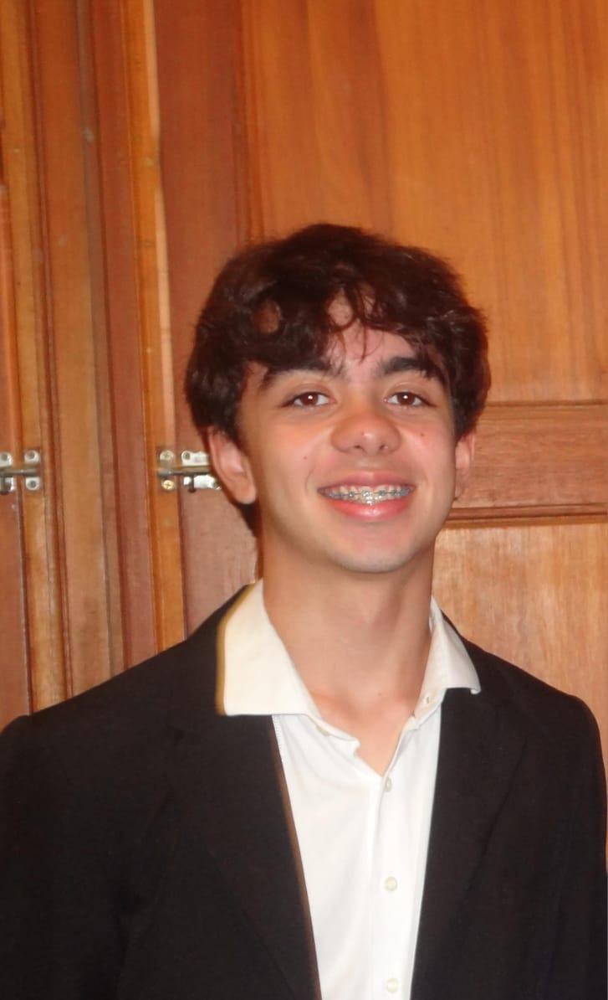
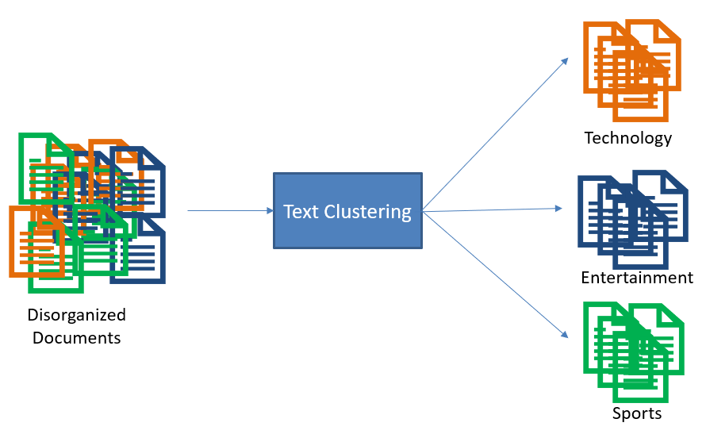
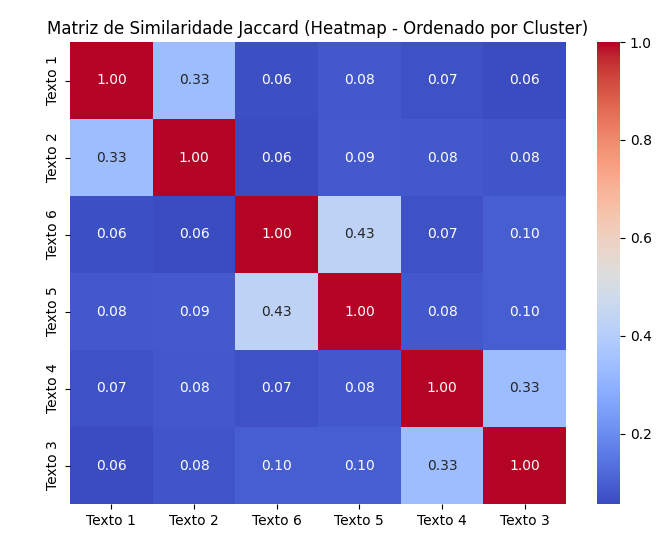
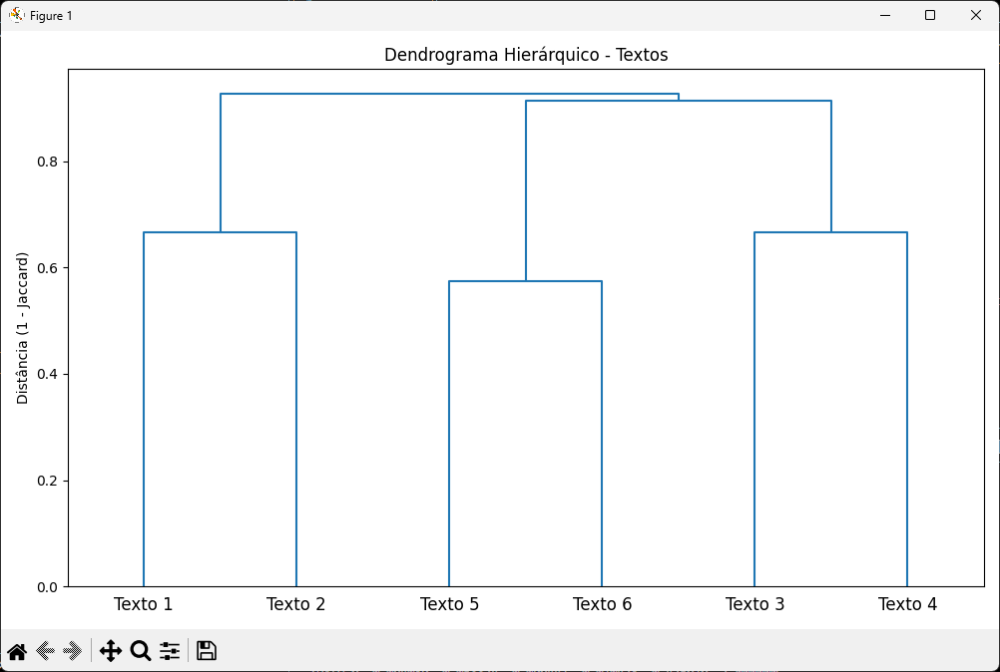

Gabriel Oliveira
Desenvolvedor de Sistemas
Em busca da primeira Oportunidade de Estágio

Desenvolvedor de Sistemas
Em busca da primeira Oportunidade de Estágio
Olá! Sou Gabriel Oliveira, estudante de Desenvolvimento de Sistemas no COLTEC-UFMG com foco em backend. Trabalho com Java, Python e SQL, desenvolvendo sistemas integrados a banco de dados e realizando análises de dados textuais e clusterização. Tenho experiência com Docker, princípios SOLID e padrões de projeto. Busco uma oportunidade de estágio para aplicar minhas habilidades, contribuir com a equipe e continuar evoluindo como desenvolvedor backend.
Iniciação Científica FUNED

O objetivo foi identificar temas em comum entre mais de 50 artigos, agrupando-os
automaticamente por similaridade textual — antes mesmo da leitura completa.
O sistema ajudou a destacar padrões, eliminar leituras redundantes e acelerar
o processo de pesquisa científica.

O mapa de calor foi, usado como representação gráfica da similaridade dos textos, sendo a coloração gerado com Python usando Seaborn, representando graficamente
o nível de similaridade entre cada par de textos. Quanto mais clara a cor, maior a relação temática
entre os artigos analisados. Este gráfico foi essencial para visualizar padrões de agrupamento.

O dendograma foi produzido com Matplotlib e representa o processo de clusterização
hierárquica de maneira visual. Ele mostra como cada artigo se conecta a outros, formando grupos
temáticos. A estrutura em “árvore” facilita a interpretação da proximidade entre os textos.